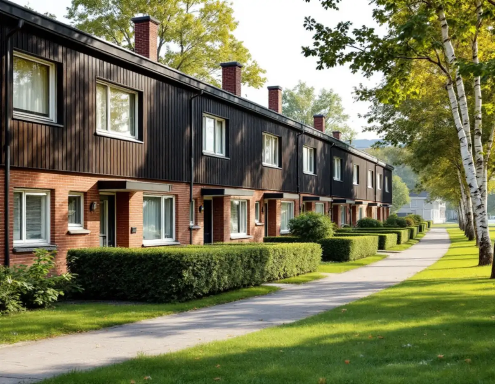
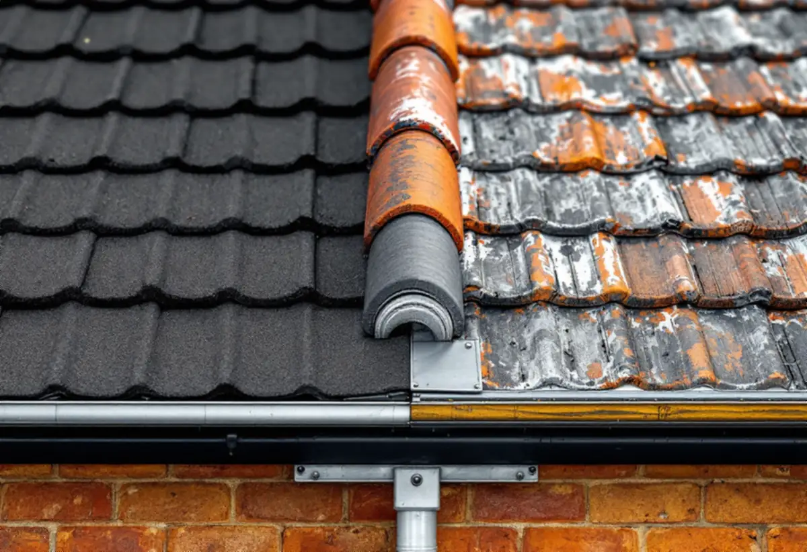
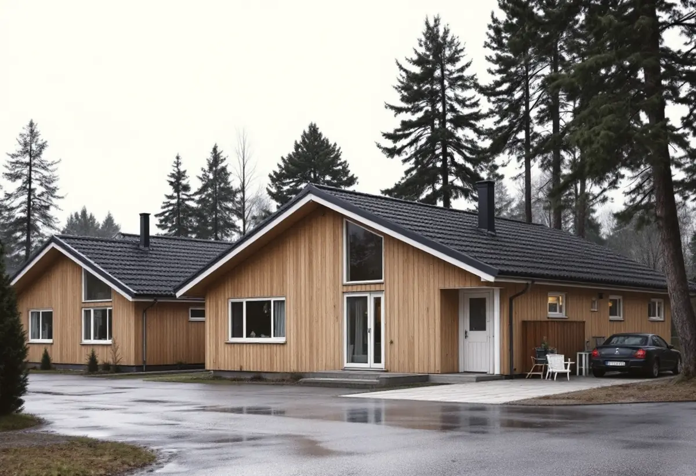

Besiktning
Vi kontrollerar tätskikt, skarvar och anslutningar mot grannar och fasad.
Skärholmens stadsdelsområde har knappt 2 000 småhus, och nästan alla ägs av de boende. De flesta är radhus och kedjehus byggda i grupper under 1960- och 1970-talen i Bredäng, Sätra och Vårberg. Husen i en grupp är lika varandra, och taket är en del av den likheten. En takrenovering i Skärholmen handlar därför både om det egna taket och om hur det passar in i längan.

I början av 1960-talet köpte staden stora markområden i sydvästra Stockholm. Bredäng var den första stadsdelen som planerades i stor skala och började byggas 1962, följd av Sätra. Byggandet blev alltmer industriellt, och en stor del av miljonprogrammets bebyggelse blev gruppbyggda småhus och radhus.
Stadens statistik för 2024 visar 1 991 småhus i Skärholmens stadsdelsområde, varav 1 976 med äganderätt. I Vårberg finns 580 småhus och i Sätra 538. Nästan alla ägs alltså av dem som bor där.

Stadens vägledning beskriver småhusen i de storskaliga stadsdelarna som strikt grupperade, med enkel och stram gestaltning. Fasaderna kunde blanda tegel, trä och skivor, men inom varje husgrupp var enhetligheten mycket stor och färgsättningen noga komponerad. Taken var ofta platta eller svagt lutande pulpettak.
Det får betydelse när ett tak ska renoveras. Ett radhus som får ett annat taktäckningsmaterial eller en annan kulör än grannarna bryter mönstret längs hela längan. Vi föreslår därför samma utförande som grannhusen om du inte har bestämt dig för något annat – och då pratar vi gärna med grannarna först.
Ett pulpettak med svag lutning leder bort vattnet långsammare än ett brant sadeltak. Boverket skriver att låglutande tak belastas mer av nederbörd, och att vatten oftast läcker in vid skarvar, genomföringar, ränndalar och infästningar.
På radhusen i Skärholmen är det därför ofta anslutningarna som är slut: där taket möter grannens tak, där det möter den högre fasaden och runt ventilationen. En renovering kan vara allt från att göra om de anslutningarna till att lägga ett helt nytt tätskikt.
Eftersom husen äger var sitt tak kan varje ägare renovera när det passar. Ofta är det ändå smart att flera grannar gör det samtidigt: ställning, container och etablering delas, och skarvarna mellan husen blir nya på en gång.
Gör bara ett hus behöver vi ansluta det nya taket till grannens gamla på ett sätt som håller. Vi dokumenterar skarven med foton, så att både du och grannen vet hur den är gjord.
Staden räknar Bredäng som en kulturhistoriskt värdefull miljö. Stadens vägledning säger att förändringar i sådana områden ska visa hänsyn till helheten, och att karaktärsskapande material och kulörer ska tas till vara när husen renoveras.
Att lägga om taket med samma material kräver inget lov. Är ditt hus eller område klassat som särskilt kulturhistoriskt värdefullt gäller dock utökad lovplikt för materialbyten. Titta på Stadsmuseets klassificeringskarta innan du bestämmer dig för något nytt.
Radhustomterna i Bredäng, Sätra och Vårberg är små, och ofta finns det bara en gångväg mellan husraderna. Det påverkar hur arbetet kan läggas upp. Material och container behöver ibland stå en bit bort, och ställningen ska inte stänga grannarnas entréer.
Vi går igenom etableringen på plats innan arbetet börjar: var ställningen står, hur rivningsmaterialet tas bort och hur länge gångvägen påverkas. Grannarna får veta det i förväg, så att ingen överraskas när arbetet startar en morgon.
När arbetet är klart går vi igenom taket med dig, och gärna med grannen om skarven delas.

Vi kontrollerar tätskikt, skarvar och anslutningar mot grannar och fasad.
Vi visar hur skarven löses och om flera hus kan göras samtidigt.
Samma utförande som husgruppen, beskrivet med foton.
Ställning och container planeras på den smala tomten.
Nytt tätskikt eller ny täckning, nya anslutningar.
Foton av skarvarna till dig och grannen.
Skatteverket räknar reparation och byte av takpannor, underlagspapp och hängrännor på ett småhus som rotarbete när du äger huset och bor i det eller har det som fritidshus. Avdraget är 30 procent av arbetskostnaden, högst 50 000 kronor per person och år och högst 75 000 kronor tillsammans med rutavdrag. Material och resor ger inget avdrag, enligt Skatteverket.
Geal drar avdraget direkt på fakturan. Är ni flera ägare har var och en sitt eget tak för avdraget. Läs mer under rotavdrag för takarbete.
Kostnaden i Skärholmen påverkas av takets yta, om det är ett pulpettak eller sadeltak, hur många anslutningar mot grannar och fasad som ska göras om och om flera hus görs samtidigt. Läs mer om vad en takrenovering kostar.
Takbyte, besiktning och plåtarbeten.
Takläggare i Skärholmen →Så fungerar en omläggning.
Takrenovering och takomläggning →Det här styr priset.
Vad kostar en takrenovering? →Räkna på takytan och ROT.
Takbyte-kalkylator →Mälarhöjden, Hägerstensåsen och tre epoker av villor.
Takrenovering i Hägersten →Tullinge, Uttran och Tumba.
Takrenovering i Botkyrka →Stuvsta, Snättringe och Skogås.
Takrenovering i Huddinge →